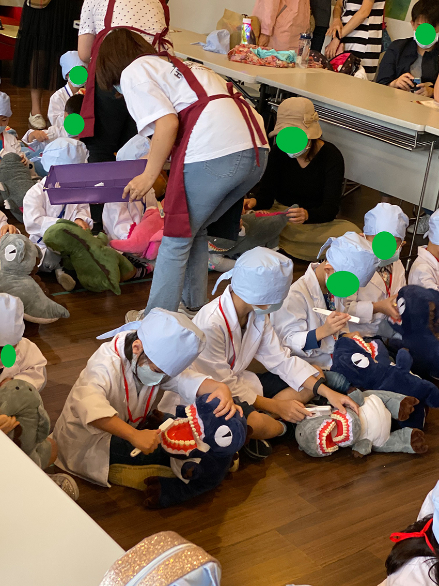

十月份帶兒子參加 OKME醫遊館台北場「科技小牙醫」的活動，兒子也學到了牙齒保健知識，不過學歸學，做歸做，課後幫兒子刷牙的時候還是一樣不配合。
入場前工作人員會量額溫，並在雙手噴上酒精消毒，接下來會有親切的工作人員幫忙穿上醫師服，戴上醫師帽就可入場。建議家長檢查一下醫師帽的緊度，不夠緊的再重綁，工作人員可能怕弄痛孩子，綁得有點鬆。這次兩個小時的課程內容如下：
第一個課程[艾拉的耶誕大冒險]，觀看影片搭配工作人員解說，以生動活潑的方式來對孩子們做衛教。建議提早報到，孩子坐在前方比較看得清楚投影幕，且跟老師的互動會更多，增加拿到小禮物的機會。家長自由入坐在周圍的座位，坐位有限。
第二個課程[牙仙子許願瓶diy]，這個環節開始，同場次的小朋友被分成兩組做活動，我兒這組的小朋友移動到另一個小教室。姊姊說完繪本後才開始製作許願瓶。
首先要在兩張紙上面用彩色筆寫上要許的願望，我兒一向在狀況外，沒有要許的意思，請我幫他畫眼睛，然後他再把紙畫破，Goog Job！
正確步驟是將塞入紙絲 / 寫上願望的紙捲 / LED 燈串到玻璃瓶內(燈串裡有兩顆鈕扣電池，要非常注意不能讓孩子拿出來玩，因為誤食鈕扣電池嚴重時會致死)，接著在瓶身打個結就完成囉，在等待教室外活動完成的空檔，工作人員發給每位小朋友一人一顆牙齒形狀的乳牙盒當小禮物。
第三個課程[科技小牙醫]，從小教室出來跟另一組換場地，此課程是整個活動的重點，每個小朋友都會拿到一個長滿牙結石的齒列 / 鑽牙機/摳牙棒/頭燈/護目鏡。護目鏡鏡架建議要如下圖黃框內那樣，把鏡架用頭燈帶固定住，要不然會變蔡閨 like this
只有三隻鱷魚病人，所以還要再分組上場體驗，每隻鱷魚病人可以被三位小醫師殘害或治療，旁邊的小姊姊會幫忙讓活動順利進行。
治療完成，鱷魚您沒事吧？
治療完鱷魚之後，換其他小朋友上場體驗，其餘小朋友就使用鑽牙機跟摳牙棒把牙結石清除乾淨。
頒發證書以及家長拍照時間
第四個課程[小鱷魚愛刷牙]，課程開始時會先播放衛教影片，接下來每個小朋友可拿到一隻長滿人類牙齒的獵奇鱷魚跟牙刷，學習正確刷牙的方法，到這邊全部課程就結束了，大家可以回家啦！
|  |
[課程費用及課後感想]
費用：一名體驗的孩童 900，陪同者一歲以上，每名100。
舉例：一大一小（體驗孩童）為1000
大約3-5歲皆適合
雖然費用不便宜，但課程時間長，且內容豐富，活動安排的順序跟動線也很流暢，回家後兒子說很喜歡上牙醫課，牙仙子許願瓶也愛不釋手，代表上這堂課值了。整體來說很推薦，下面提供今年度的其它小醫師主題給大家參考。